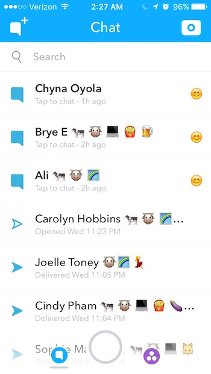
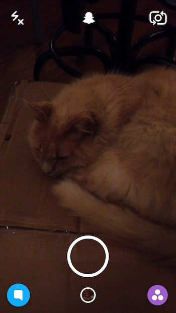

Like everyone else, I send and receive a lot of emails. And it got me thinking, isn’t writing an email just filling out a form?
The in-browser gmail email client I frequently use has a clear priority or hierarchy. The text fields are given ample space for who you are writing to and what you’re writing, and color is kept minimal, except for the send button, which you wouldn’t want to hit by mistake. The clarity falls apart a bit, however. While the email form attempts restraint and simplicity in its minimalist-ish form, using icons without labels means I often mix up functions. One recurring problem is mistaking the “attachment” icon (second to the right from Send) for the “link” icon (sixth to the right from Send). In a way, these functions are conceptually similar, and gmail’s use of a non-standard “link” icon perpetually fools me into thinking it must be a paperclip, and therefore the paperclip icon is a link. This mix up drives me pretty bonkers in an otherwise easy to use email application.

Thanks for reading again. I just complain about apps I use here, huh?
One: "Evaluate a user interface"
I use Snapchat quite frequently to keep in touch with friends. However, I think its interface is pretty ridiculous, so that's why I'm writing about it.

As you can see in this screenshot, Snapchat opens directly to the camera view. It has been widely lauded for this in interaction design and ux design circles. However, that seems to be where the intuitive features end. I have a firm belief that snapchat intends to make its product exclusive to teens by choosing interaction patterns that even college students have trouble figuring out.
For the longest time, there was literally no indication of what else one could do from this screen. It's all icons. One must be willing to risk loosing a photo and simply tapping around to discover features, something my own risk-adverse parents have had the greatest trouble doing when I tried to get them to join.
Thankfully, Snapchat seems to be taking some steps in a positive direction. While previously, one could not interact with the friend chatlist, seen below, by tapping on names. Only a swipe from left to right, difficult for a right-handed person holding their phone with one hand to do, especially when trying to read a message listed at the top.
Well I can't hate it too much if I'm still using it, right? Thanks for listening to me rant about an app I use every-other day and love to hate. The end.